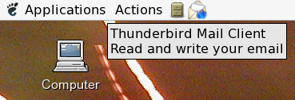

Q: How do I make the new mail icon appear in KDE?
A: Make sure you have the System Tray in your panel. To add it, right-click the panel and choose Add | Applets | System Tray.
Q: How do I make the new mail icon appear in GNOME?
A: Make sure you have the Notification Area in your panel. To add it, right-click the panel, choose Add to Panel, select the Notification Area item and click the Add button.
Q: Can you make the icon show all the time, regardless of having new mail, as a handy shortcut to bring up Thunderbird?
A: This will be against the GNOME Human Interface Guidelines, which suggests icons should appear only to alert users of some event. You probably know how much those icons clutter the Taskbar on Windows XP machines, and we wouldn't want the same to happen on GNOME. That's why I don't want to implement this feature.
However, it is handy to be able to switch to Thunderbird, whether
minimized or on a different workspace, so here's what I do: simply place a Thunderbird
icon on your panel (by dragging it from the Applications menu). Whenever you
click it, if Thunderbird is already running, it'll maximize.

Q: After I install a newer version of the extension (e.g. 1.0.7) and restart Thunderbird, the old version (e.g. 1.0.5) still shows. How can I fix this?
A: I am working on resolving this problem. Meanwhile, you can try a workaround:
~/.mozilla-thunderbird/.../).extensions directory.{2e1b75f1-6b5a-4f1d-89b4-424f636e4fba} directory and all its contents.Q: Can I avoid being notified about new mail if it is "Junk mail"?
A: This extension does not control the manner in which folders are marked as having new mail. It doesn't perform any actions on its own -- it just obeys Mozilla's notifications, the same notification that's used to play a sound every time new mail is received. Therefore, such requests should not be addressed to me but to Mozilla and Thunderbird developers -- and in fact, there are few issues reported already: bug 232104 and bug 11040. You can increase the likelyhood of those issues being addressed by 'voting' for them on the Bugzilla site (see the above links).